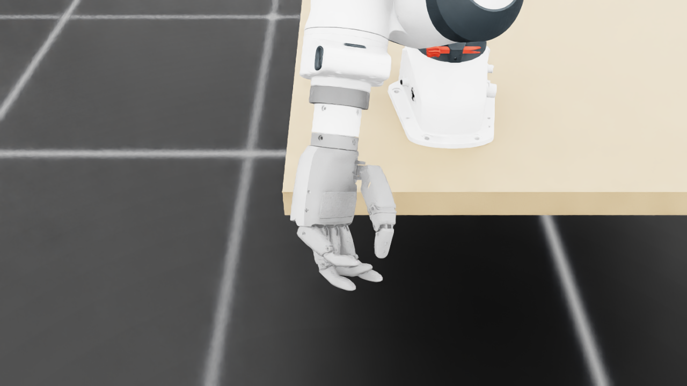
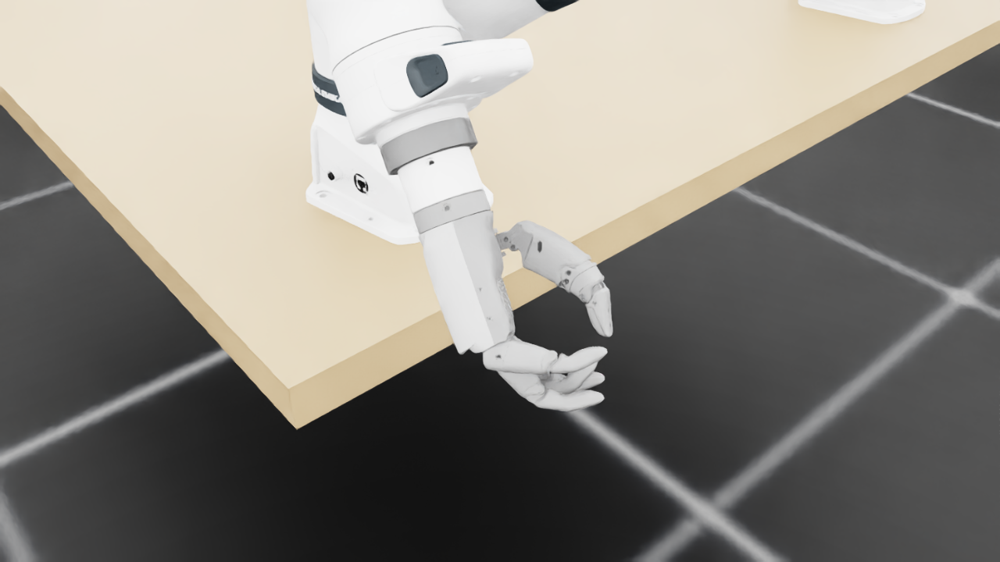
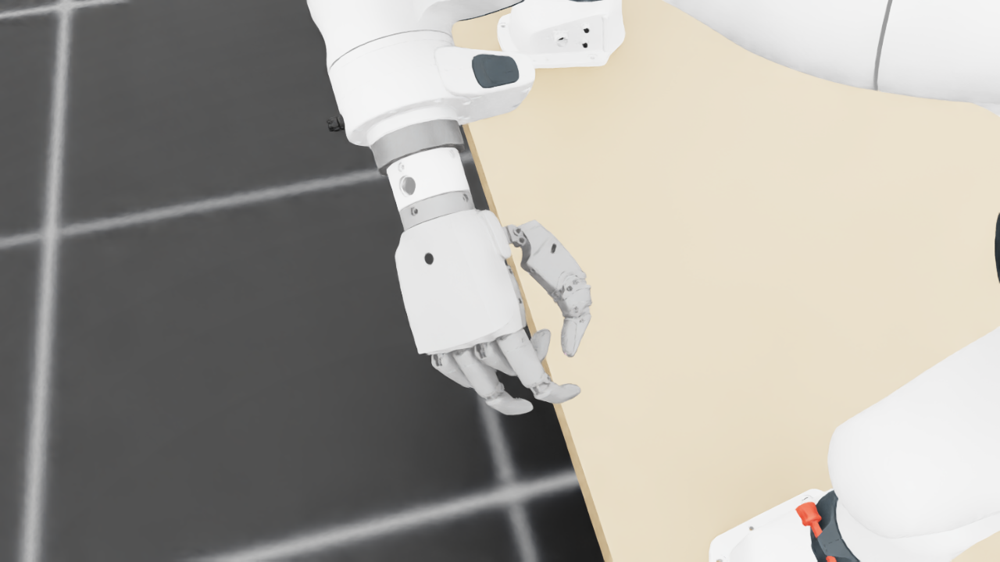
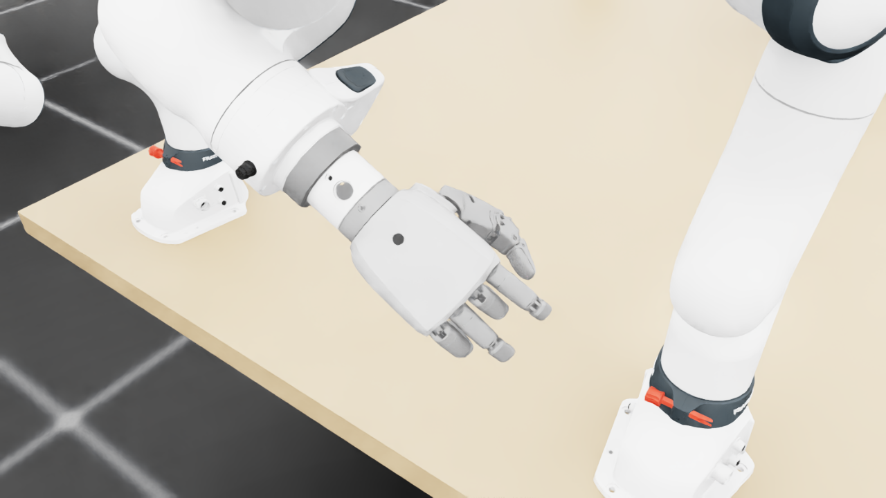
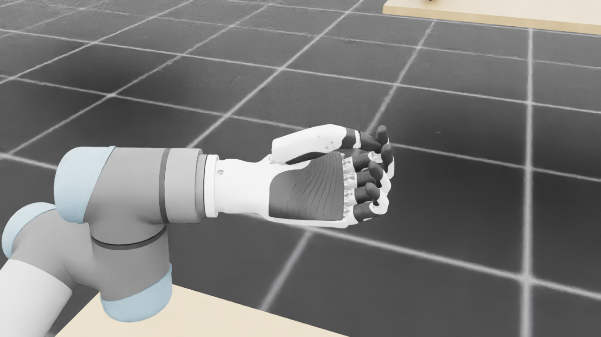
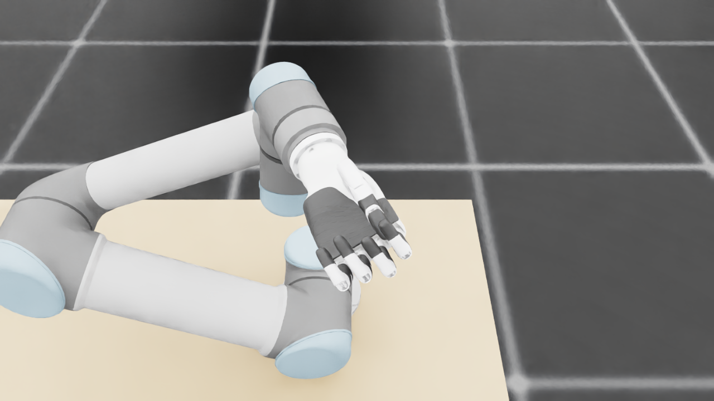
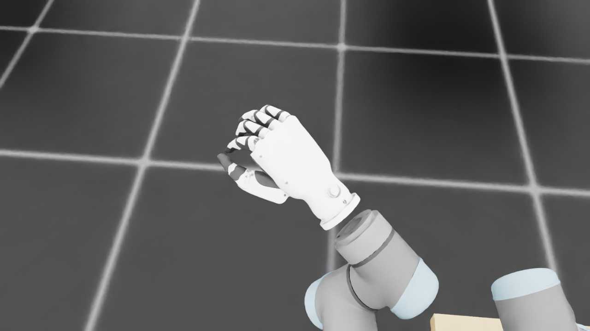
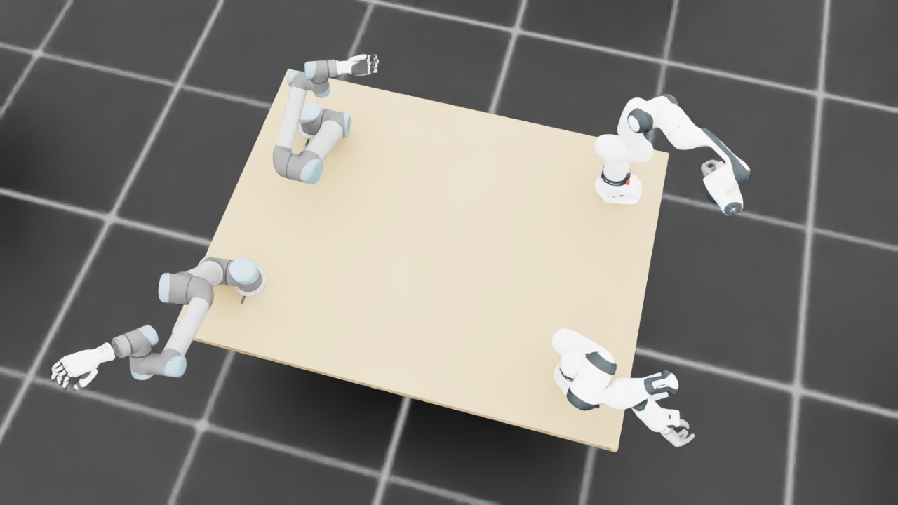
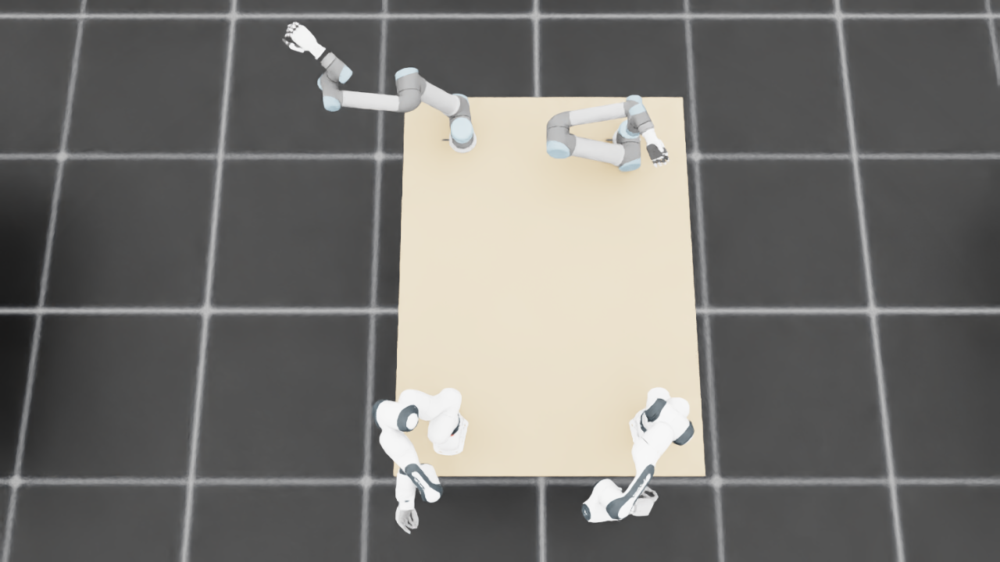
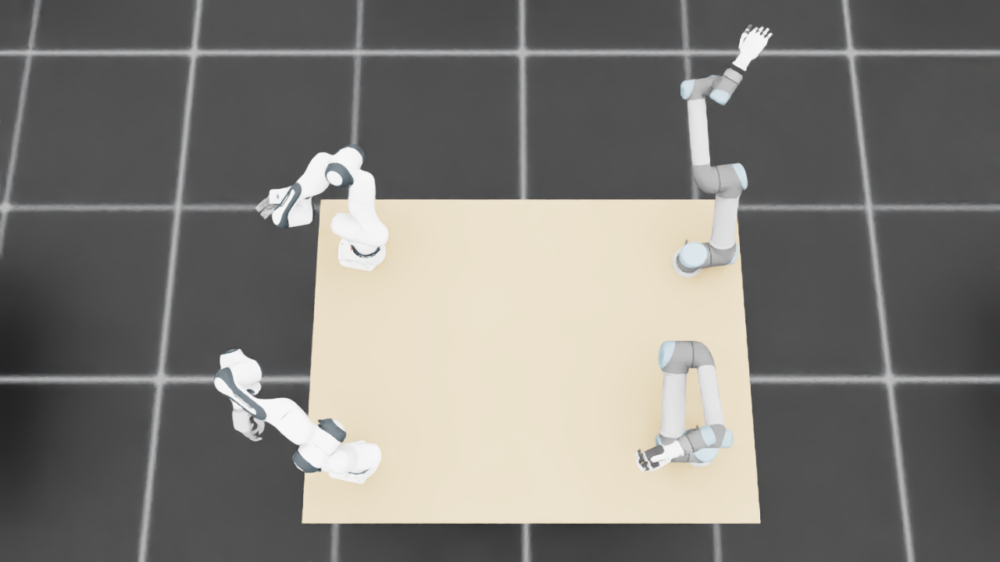

规定初始像素覆盖已通过独立数据验收，完整12步与物理安全未通过。Prescribed initial pixel coverage passes the independent DATA audit; full12-step and physical acceptance remain incomplete. Original1280×720; no edits/crop. Every image below is INITIAL, not micro1/final.
{"seed": 1, "proposal_id": 2072, "global_id": 16408, "family": 0}









{
"qualified": true,
"arms": {
"F_L": {
"qualified": true,
"palm_visual_peak_pixels": 17296,
"finger_family_peak_pixels": {
"thumb": 8602,
"index": 1953,
"middle": 1780,
"ring": 3162,
"little": 4732
},
"per_native_body_peak_pixels": {
"/World/envs/env_8/F_L/f2_hand/left_hand_base": 24266,
"/World/envs/env_8/F_L/f2_hand/left_index_1": 1218,
"/World/envs/env_8/F_L/f2_hand/left_middle_1": 634,
"/World/envs/env_8/F_L/f2_hand/left_pinky_1": 3139,
"/World/envs/env_8/F_L/f2_hand/left_ring_1": 1207,
"/World/envs/env_8/F_L/f2_hand/left_thumb_1": 330,
"/World/envs/env_8/F_L/f2_hand/left_index_2": 1842,
"/World/envs/env_8/F_L/f2_hand/left_middle_2": 1146,
"/World/envs/env_8/F_L/f2_hand/left_pinky_2": 1593,
"/World/envs/env_8/F_L/f2_hand/left_ring_2": 1955,
"/World/envs/env_8/F_L/f2_hand/left_thumb_2": 4712,
"/World/envs/env_8/F_L/f2_hand/left_thumb_3": 1858,
"/World/envs/env_8/F_L/f2_hand/left_thumb_4": 1768
},
"native_body_visibility_gaps": [],
"all_native_hand_bodies_observed": true,
"full_mesh_coverage_certified": false,
"all_recorded_attempt_peak": {
"qualified": false,
"palm_visual_peak_pixels": 28433,
"finger_family_peak_pixels": {
"thumb": 10635,
"index": 5937,
"middle": 3352,
"ring": 3646,
"little": 4732
},
"per_native_body_peak_pixels": {
"/World/envs/env_8/F_L/f2_hand/left_hand_base": 34638,
"/World/envs/env_8/F_L/f2_hand/left_index_1": 3479,
"/World/envs/env_8/F_L/f2_hand/left_middle_1": 2350,
"/World/envs/env_8/F_L/f2_hand/left_pinky_1": 3139,
"/World/envs/env_8/F_L/f2_hand/left_ring_1": 2382,
"/World/envs/env_8/F_L/f2_hand/left_thumb_1": 1008,
"/World/envs/env_8/F_L/f2_hand/left_index_2": 2458,
"/World/envs/env_8/F_L/f2_hand/left_middle_2": 1409,
"/World/envs/env_8/F_L/f2_hand/left_pinky_2": 1593,
"/World/envs/env_8/F_L/f2_hand/left_ring_2": 1955,
"/World/envs/env_8/F_L/f2_hand/left_thumb_2": 5695,
"/World/envs/env_8/F_L/f2_hand/left_thumb_3": 2315,
"/World/envs/env_8/F_L/f2_hand/left_thumb_4": 2215
},
"native_body_visibility_gaps": [],
"all_native_hand_bodies_observed": true,
"full_mesh_coverage_certified": false,
"qualification": false
},
"attempts": 7,
"decoded": 7
},
"F_R": {
"qualified": true,
"palm_visual_peak_pixels": 31776,
"finger_family_peak_pixels": {
"thumb": 8379,
"index": 4394,
"middle": 1894,
"ring": 3306,
"little": 1805
},
"per_native_body_peak_pixels": {
"/World/envs/env_8/F_R/f2_hand/right_hand_base": 38263,
"/World/envs/env_8/F_R/f2_hand/right_index_1": 2761,
"/World/envs/env_8/F_R/f2_hand/right_middle_1": 1391,
"/World/envs/env_8/F_R/f2_hand/right_pinky_1": 1564,
"/World/envs/env_8/F_R/f2_hand/right_ring_1": 2204,
"/World/envs/env_8/F_R/f2_hand/right_thumb_1": 690,
"/World/envs/env_8/F_R/f2_hand/right_index_2": 1633,
"/World/envs/env_8/F_R/f2_hand/right_middle_2": 782,
"/World/envs/env_8/F_R/f2_hand/right_pinky_2": 457,
"/World/envs/env_8/F_R/f2_hand/right_ring_2": 1193,
"/World/envs/env_8/F_R/f2_hand/right_thumb_2": 4635,
"/World/envs/env_8/F_R/f2_hand/right_thumb_3": 1745,
"/World/envs/env_8/F_R/f2_hand/right_thumb_4": 1545
},
"native_body_visibility_gaps": [],
"all_native_hand_bodies_observed": true,
"full_mesh_coverage_certified": false,
"all_recorded_attempt_peak": {
"qualified": true,
"palm_visual_peak_pixels": 31776,
"finger_family_peak_pixels": {
"thumb": 8379,
"index": 4394,
"middle": 1894,
"ring": 3306,
"little": 1805
},
"per_native_body_peak_pixels": {
"/World/envs/env_8/F_R/f2_hand/right_hand_base": 38263,
"/World/envs/env_8/F_R/f2_hand/right_index_1": 2761,
"/World/envs/env_8/F_R/f2_hand/right_middle_1": 1391,
"/World/envs/env_8/F_R/f2_hand/right_pinky_1": 1564,
"/World/envs/env_8/F_R/f2_hand/right_ring_1": 2204,
"/World/envs/env_8/F_R/f2_hand/right_thumb_1": 690,
"/World/envs/env_8/F_R/f2_hand/right_index_2": 1633,
"/World/envs/env_8/F_R/f2_hand/right_middle_2": 782,
"/World/envs/env_8/F_R/f2_hand/right_pinky_2": 457,
"/World/envs/env_8/F_R/f2_hand/right_ring_2": 1193,
"/World/envs/env_8/F_R/f2_hand/right_thumb_2": 4635,
"/World/envs/env_8/F_R/f2_hand/right_thumb_3": 1745,
"/World/envs/env_8/F_R/f2_hand/right_thumb_4": 1545
},
"native_body_visibility_gaps": [],
"all_native_hand_bodies_observed": true,
"full_mesh_coverage_certified": false,
"qualification": false
},
"attempts": 3,
"decoded": 3
},
"U_L": {
"qualified": true,
"palm_visual_peak_pixels": 18882,
"finger_family_peak_pixels": {
"thumb": 12131,
"index": 3933,
"middle": 3154,
"ring": 3337,
"little": 4297
},
"per_native_body_peak_pixels": {
"/World/envs/env_8/U_L/wrist_3_link": 56801,
"/World/envs/env_8/U_L/left_index_1": 2835,
"/World/envs/env_8/U_L/left_little_1": 2489,
"/World/envs/env_8/U_L/left_middle_1": 2616,
"/World/envs/env_8/U_L/left_ring_1": 1856,
"/World/envs/env_8/U_L/left_thumb_1": 90,
"/World/envs/env_8/U_L/left_index_2": 1774,
"/World/envs/env_8/U_L/left_little_2": 1829,
"/World/envs/env_8/U_L/left_middle_2": 1923,
"/World/envs/env_8/U_L/left_ring_2": 2101,
"/World/envs/env_8/U_L/left_thumb_2": 7493,
"/World/envs/env_8/U_L/left_thumb_3": 3145,
"/World/envs/env_8/U_L/left_thumb_4": 1403
},
"native_body_visibility_gaps": [],
"all_native_hand_bodies_observed": true,
"full_mesh_coverage_certified": false,
"all_recorded_attempt_peak": {
"qualified": false,
"palm_visual_peak_pixels": 18882,
"finger_family_peak_pixels": {
"thumb": 12482,
"index": 5667,
"middle": 3154,
"ring": 3337,
"little": 5888
},
"per_native_body_peak_pixels": {
"/World/envs/env_8/U_L/wrist_3_link": 67224,
"/World/envs/env_8/U_L/left_index_1": 3555,
"/World/envs/env_8/U_L/left_little_1": 3559,
"/World/envs/env_8/U_L/left_middle_1": 2616,
"/World/envs/env_8/U_L/left_ring_1": 2075,
"/World/envs/env_8/U_L/left_thumb_1": 662,
"/World/envs/env_8/U_L/left_index_2": 2112,
"/World/envs/env_8/U_L/left_little_2": 2329,
"/World/envs/env_8/U_L/left_middle_2": 1923,
"/World/envs/env_8/U_L/left_ring_2": 2101,
"/World/envs/env_8/U_L/left_thumb_2": 7739,
"/World/envs/env_8/U_L/left_thumb_3": 3185,
"/World/envs/env_8/U_L/left_thumb_4": 1467
},
"native_body_visibility_gaps": [],
"all_native_hand_bodies_observed": true,
"full_mesh_coverage_certified": false,
"qualification": false
},
"attempts": 7,
"decoded": 7
},
"U_R": {
"qualified": true,
"palm_visual_peak_pixels": 9566,
"finger_family_peak_pixels": {
"thumb": 8021,
"index": 2758,
"middle": 2575,
"ring": 1946,
"little": 3912
},
"per_native_body_peak_pixels": {
"/World/envs/env_8/U_R/wrist_3_link": 36768,
"/World/envs/env_8/U_R/right_index_1": 1383,
"/World/envs/env_8/U_R/right_little_1": 2418,
"/World/envs/env_8/U_R/right_middle_1": 1451,
"/World/envs/env_8/U_R/right_ring_1": 1448,
"/World/envs/env_8/U_R/right_thumb_1": 402,
"/World/envs/env_8/U_R/right_index_2": 1375,
"/World/envs/env_8/U_R/right_little_2": 1494,
"/World/envs/env_8/U_R/right_middle_2": 1391,
"/World/envs/env_8/U_R/right_ring_2": 1067,
"/World/envs/env_8/U_R/right_thumb_2": 4938,
"/World/envs/env_8/U_R/right_thumb_3": 1833,
"/World/envs/env_8/U_R/right_thumb_4": 863
},
"native_body_visibility_gaps": [],
"all_native_hand_bodies_observed": true,
"full_mesh_coverage_certified": false,
"all_recorded_attempt_peak": {
"qualified": true,
"palm_visual_peak_pixels": 10243,
"finger_family_peak_pixels": {
"thumb": 8021,
"index": 2758,
"middle": 2575,
"ring": 1987,
"little": 3912
},
"per_native_body_peak_pixels": {
"/World/envs/env_8/U_R/wrist_3_link": 36768,
"/World/envs/env_8/U_R/right_index_1": 1383,
"/World/envs/env_8/U_R/right_little_1": 2418,
"/World/envs/env_8/U_R/right_middle_1": 1451,
"/World/envs/env_8/U_R/right_ring_1": 1448,
"/World/envs/env_8/U_R/right_thumb_1": 402,
"/World/envs/env_8/U_R/right_index_2": 1375,
"/World/envs/env_8/U_R/right_little_2": 1494,
"/World/envs/env_8/U_R/right_middle_2": 1391,
"/World/envs/env_8/U_R/right_ring_2": 1067,
"/World/envs/env_8/U_R/right_thumb_2": 4938,
"/World/envs/env_8/U_R/right_thumb_3": 1833,
"/World/envs/env_8/U_R/right_thumb_4": 863
},
"native_body_visibility_gaps": [],
"all_native_hand_bodies_observed": true,
"full_mesh_coverage_certified": false,
"qualification": false
},
"attempts": 4,
"decoded": 4
}
},
"wide": {
"qualified": true,
"per_native_object_peak_pixels": {
"/World/envs/env_8/F_L/fr3_link0": 1472,
"/World/envs/env_8/F_L/fr3_link1": 1313,
"/World/envs/env_8/F_L/fr3_link2": 1997,
"/World/envs/env_8/F_L/fr3_link3": 3309,
"/World/envs/env_8/F_L/fr3_link4": 3466,
"/World/envs/env_8/F_L/fr3_link5": 2204,
"/World/envs/env_8/F_L/fr3_link6": 1230,
"/World/envs/env_8/F_L/fr3_link7": 792,
"/World/envs/env_8/F_L/fr3_link8": 11,
"/World/envs/env_8/F_L/f2_hand/left_hand_base": 467,
"/World/envs/env_8/F_L/f2_hand/left_index_1": 30,
"/World/envs/env_8/F_L/f2_hand/left_middle_1": 26,
"/World/envs/env_8/F_L/f2_hand/left_pinky_1": 72,
"/World/envs/env_8/F_L/f2_hand/left_ring_1": 24,
"/World/envs/env_8/F_L/f2_hand/left_thumb_1": 0,
"/World/envs/env_8/F_L/f2_hand/left_index_2": 62,
"/World/envs/env_8/F_L/f2_hand/left_middle_2": 71,
"/World/envs/env_8/F_L/f2_hand/left_pinky_2": 61,
"/World/envs/env_8/F_L/f2_hand/left_ring_2": 38,
"/World/envs/env_8/F_L/f2_hand/left_thumb_2": 113,
"/World/envs/env_8/F_L/f2_hand/left_thumb_3": 43,
"/World/envs/env_8/F_L/f2_hand/left_thumb_4": 22,
"/World/envs/env_8/F_R/fr3_link0": 2280,
"/World/envs/env_8/F_R/fr3_link1": 2300,
"/World/envs/env_8/F_R/fr3_link2": 1812,
"/World/envs/env_8/F_R/fr3_link3": 2316,
"/World/envs/env_8/F_R/fr3_link4": 2993,
"/World/envs/env_8/F_R/fr3_link5": 4064,
"/World/envs/env_8/F_R/fr3_link6": 1940,
"/World/envs/env_8/F_R/fr3_link7": 215,
"/World/envs/env_8/F_R/fr3_link8": 13,
"/World/envs/env_8/F_R/f2_hand/right_hand_base": 665,
"/World/envs/env_8/F_R/f2_hand/right_index_1": 73,
"/World/envs/env_8/F_R/f2_hand/right_middle_1": 23,
"/World/envs/env_8/F_R/f2_hand/right_pinky_1": 0,
"/World/envs/env_8/F_R/f2_hand/right_ring_1": 15,
"/World/envs/env_8/F_R/f2_hand/right_thumb_1": 11,
"/World/envs/env_8/F_R/f2_hand/right_index_2": 48,
"/World/envs/env_8/F_R/f2_hand/right_middle_2": 44,
"/World/envs/env_8/F_R/f2_hand/right_pinky_2": 23,
"/World/envs/env_8/F_R/f2_hand/right_ring_2": 18,
"/World/envs/env_8/F_R/f2_hand/right_thumb_2": 139,
"/World/envs/env_8/F_R/f2_hand/right_thumb_3": 45,
"/World/envs/env_8/F_R/f2_hand/right_thumb_4": 37,
"/World/envs/env_8/U_L/base_link": 213,
"/World/envs/env_8/U_L/shoulder_link": 1231,
"/World/envs/env_8/U_L/upper_arm_link": 4652,
"/World/envs/env_8/U_L/forearm_link": 3624,
"/World/envs/env_8/U_L/wrist_1_link": 607,
"/World/envs/env_8/U_L/wrist_2_link": 965,
"/World/envs/env_8/U_L/wrist_3_link": 1208,
"/World/envs/env_8/U_L/left_index_1": 51,
"/World/envs/env_8/U_L/left_little_1": 36,
"/World/envs/env_8/U_L/left_middle_1": 40,
"/World/envs/env_8/U_L/left_ring_1": 38,
"/World/envs/env_8/U_L/left_thumb_1": 2,
"/World/envs/env_8/U_L/left_index_2": 39,
"/World/envs/env_8/U_L/left_little_2": 45,
"/World/envs/env_8/U_L/left_middle_2": 43,
"/World/envs/env_8/U_L/left_ring_2": 43,
"/World/envs/env_8/U_L/left_thumb_2": 138,
"/World/envs/env_8/U_L/left_thumb_3": 62,
"/World/envs/env_8/U_L/left_thumb_4": 32,
"/World/envs/env_8/U_R/base_link": 519,
"/World/envs/env_8/U_R/shoulder_link": 1935,
"/World/envs/env_8/U_R/upper_arm_link": 4257,
"/World/envs/env_8/U_R/forearm_link": 5251,
"/World/envs/env_8/U_R/wrist_1_link": 975,
"/World/envs/env_8/U_R/wrist_2_link": 1479,
"/World/envs/env_8/U_R/wrist_3_link": 2616,
"/World/envs/env_8/U_R/right_index_1": 124,
"/World/envs/env_8/U_R/right_little_1": 130,
"/World/envs/env_8/U_R/right_middle_1": 141,
"/World/envs/env_8/U_R/right_ring_1": 140,
"/World/envs/env_8/U_R/right_thumb_1": 2,
"/World/envs/env_8/U_R/right_index_2": 62,
"/World/envs/env_8/U_R/right_little_2": 22,
"/World/envs/env_8/U_R/right_middle_2": 61,
"/World/envs/env_8/U_R/right_ring_2": 76,
"/World/envs/env_8/U_R/right_thumb_2": 293,
"/World/envs/env_8/U_R/right_thumb_3": 137,
"/World/envs/env_8/U_R/right_thumb_4": 70,
"/World/envs/env_8/TableF": 119470,
"/World/envs/env_8/TableU": 104594
},
"arm_peak_pixels": {
"F_L": 14058,
"F_R": 16788,
"U_L": 12833,
"U_R": 17438
},
"table_peak_pixels": {
"TableF": 119470,
"TableU": 104594
},
"critical_body_peak_pixels": {
"/World/envs/env_8/U_L/forearm_link": 3624,
"/World/envs/env_8/U_L/wrist_2_link": 965,
"/World/envs/env_8/U_R/forearm_link": 5251,
"/World/envs/env_8/U_R/wrist_2_link": 1479
}
},
"raw_attempt_count": 33,
"PNG_count": 33,
"angle_records": 33,
"max_actual_angle_identity_error_deg": 0.0,
"held_snapshot_checks": 266,
"universal_visibility_impossible": false,
"full_mesh_coverage_certified": false
}